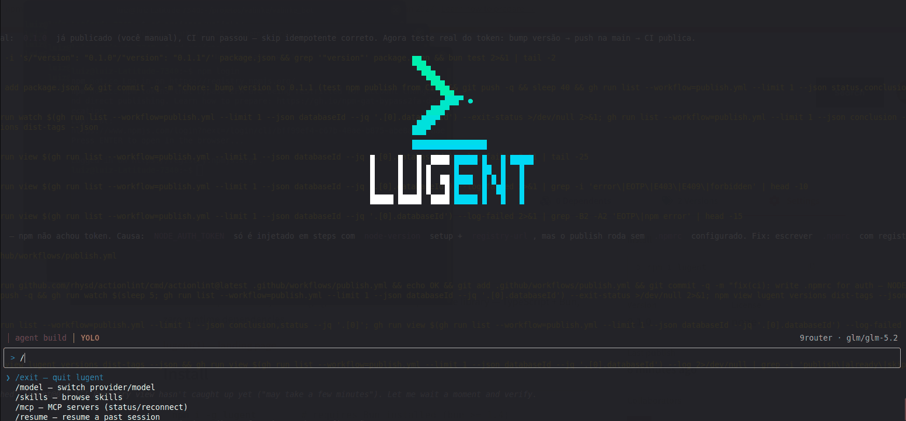

lugent — a minimal coding agent you can read in an afternoon
Description
lugent is an OpenCode-style coding agent that runs in your terminal: a full-screen TUI with live model reasoning, markdown answers and inline permission dialogs, plus a plain ANSI REPL when stdout isn't a TTY.
The core is a pure TypeScript library with zero runtime dependencies, built on Bun and developed entirely test-first: 486 tests, including a golden snapshot that pins the system prompt byte-for-byte. It talks to any OpenAI-compatible endpoint (Ollama, LM Studio, OpenRouter, local routers). Eight tools, y/n/a permission prompts, sessions in one SQLite file, markdown skills and agents dropped in a folder, MCP servers over stdio or streamable HTTP.
No platform lock-in, no vendored runtime, no magic. Clone it, read it, change it.
github.com/luizrgf2/lugent →Screenshot

A real session: splash, the chrome line (agent build │ YOLO │ provider · model), the boxed prompt and the / command menu. Terminal scrollback is the transcript — the frame below it holds only the live turn.
Synopsis
Ships unbuilt TypeScript under a #!/usr/bin/env bun shebang — the package is the same bytes the tests ran against. Requires Bun 1.4+ and any OpenAI-compatible chat endpoint (/v1). Each provider gets a health check at startup; unreachable ones report OFF and lugent still starts.
Features
Agents
An agent is a named profile — system prompt, model, tool allowlist, permission overrides — written in markdown. Same file shape as a skill.
.agents/agents/reviewer.md→id reviewer .agents/agents/team/audit.md→id team/audit (nested path is the id) ~/.agents/agents/reviewer.md→user scope; project wins on the same id
---description: Reviews changes read-only color: cyan model: 9router/glm-5.2 tools: [read, glob, grep] permissions: {shell: ask}---You are a code reviewer. Report findings with file and line references.
Fields
| description | Shown by /agent. Absent → none. |
| model | provider/model, both required — the provider must exist in the config. Absent → inherit the session's. |
| tools | Ids sent to the model; anything else is invisible to it. A tools key that parses to nothing fails closed to no tools, with a warning. Absent → all tools. |
| permissions | Per-tool allow / ask / deny; deny also removes the tool. Absent → tool default. |
| mode | primary │ subagent │ all — who may launch this agent. Absent → primary. |
| color | TUI display color (ink name or #rrggbb). Display-only. |
Built-ins, always present
| build | primary | The base system prompt. The startup default — always a way back (/agent build). |
| plan | primary | Explore and design; edit/write denied, shell still permission-gated. |
| general | subagent | General-purpose worker with a fresh context. Delegation works with zero files. |
Built-ins load first, so a file with the same id overrides one without removing it — drop .agents/agents/plan.md to write your own. A file agent's body replaces the base prompt; AGENTS.md and the skills advertisement are still added on top. Switching mid-session keeps history and applies the new prompt, model and toolset from the next turn.
/agent lists and switches. defaultAgent picks the startup agent (build by default; an unknown id warns and falls back).
Subagents
A mode: subagent agent is not a persona you switch into — it is a worker the model launches. During a turn the model calls the subagent tool with { agent, prompt }; lugent starts a child session (same store, same process) that runs with the subagent's own prompt, model and tools, and the child's final message returns as the tool result.
---description: Probes one file and summarizes it mode: subagent tools: [read]---You are a probe. Read exactly one file and summarize it in three lines.
| Discovery | The model sees a # Subagents section of the prompt (id + description), rendered only when at least one is launchable — same mechanism as # Skills. |
| Fresh context | The child shares no history: the prompt must be self-contained. |
| Parallel | Several subagent calls in one tool round run at the same time. |
| Depth 1 | A child never gets the subagent tool or the catalog, so it cannot launch a grandchild. |
| Hidden | Children are persisted with a parent link but stay out of /resume and the TUI picker; only the final message returns. |
| Not in /agent | mode: subagent agents are launch targets, not session personas. |
The tool defaults to ask, and an agent's tools/permissions can allow, ask or deny subagent by name like any other tool.
Skills
Drop markdown files in .agents/skills/ — nested dir or flat. Both scopes load (user ~/.agents/skills/ + project .agents/skills/); on the same id the project wins.
.agents/skills/git-release/SKILL.md→id git-release .agents/skills/review.md→id review
---name: Git Release description: Prepare and publish releases---Step 1: ...
A skill with a description in its frontmatter is advertised in the system prompt (id, name, description only). The model loads the full body on demand through the skill tool — skill content never bloats the prompt upfront.
| Let the model pick | When your request matches an advertised description ("prepare a release"), it calls skill git-release itself — you see the ▸ skill line. |
| Force one | Mention the id in your message ("use skill git-release to …"). |
| Browse | TUI /skills lists what is loaded (read-only); /skills in the plain REPL lists ids. |
Toggling skills on/off is not implemented — every loaded skill is active in every session (selector design deferred).
MCP servers
lugent speaks the Model Context Protocol over two transports, declared in the mcp map of lugent.json.
"mcp": {
"local-one": { "command": ["npx", "-y", "some-mcp@latest"] },
"remote-one": { "url": "https://host/mcp",
"headers": { "X-Tenant": "{env:TENANT}" } }
}
| local | stdio | Spawns a child process, newline-delimited JSON-RPC over stdio (chrome-devtools, browsermcp). |
| remote | http | Streamable HTTP: one POST per JSON-RPC message, Mcp-Session-Id, SSE responses, 202 notifications. http is an alias. |
At startup every enabled server connects in parallel and its tools are bridged as <server>_<tool>. A server that fails is reported (mcp: name: reason) and never stops lugent. A local child that dies later flips to failed on its own.
OAuth for remote servers
A remote server refusing the configured headers answers 401 with a discovery hint. lugent does not fail it — it reports auth_required, because the fix is interactive. Pick authenticate (/mcp auth <name> in the plain REPL):
| 1. discover | Protected-resource + authorization-server metadata (RFC 9728 / RFC 8414), https only. |
| 2. register | Dynamic client registration (RFC 7591), once per server; the client_id is reused. |
| 3. consent | Loopback listener on 127.0.0.1:48762/oauth/callback, PKCE S256, URL printed as fallback and opened in the browser. |
| 4. exchange | Waits up to 5 min, always sends resource so the token is bound to that endpoint, verifies iss. |
| 5. store | ~/.local/share/lugent/mcp-oauth.json, mode 0600, then reconnects. |
Tokens are bound to the URL that issued them, so a project lugent.json shadowing a global server name never inherits the global credential. Refresh is proactive (60 s before expiry) and forced once on a mid-session 401; a rejected refresh drops the tokens back to auth_required. logout revokes at the server when it offers revocation, then deletes the local copy.
/mcp lists every server with its status — connected (tool count), connecting, failed (error), auth_required, disabled — and lets you act on one: reconnect, disable, enable, authenticate, logout. Enabling and disabling is session-scoped: lugent never rewrites lugent.json, because a turn must not silently edit a file that can hold secrets.
Trust note: a project lugent.json can declare local servers, whose command is spawned at startup with no prompt — the same trust channel as a project AGENTS.md, skills or agents. Read a repo's mcp block before running lugent in it. Put tokens in {env:VAR}, never inline. MCP tools are untrusted third parties, so they default to ask.
Permissions
Every tool has a default. During a turn the model may trigger an inline dialog: answer y (once), n (deny — the model sees the refusal), or a (always, this session, for that tool + resource). Anything else — including Enter — denies.
Extra guard
Any resource outside the project root (absolute path, .., ~) forces an ask even for allow tools, unless already granted for the session.
Yolo mode
TUI only — the plain REPL has no equivalent. /permissions → yolo auto-approves every tool call, no dialogs, including outside-project paths. The chrome line shows a red YOLO. The choice persists to the global config (permissionMode) and a project lugent.json overrides it while present. Yolo never modifies the per-session a grants; /permissions → normal turns it off.
An agent's permissions override replaces the tool default — but a session always grant still wins, and the outside-project guard still forces an ask.
Options
| --plain | Force the inline ANSI REPL. Piped stdin (non-TTY) falls back to it automatically. |
| --db <path> | Override the database location. |
Slash commands
| /model [provider] [model] | Two-level picker (provider → live model list). Bare call lists models; the choice is pinned to the session, so /resume brings it back. |
| /agent [id] | Agent picker; the chosen profile's prompt, model and toolset apply from the next turn. |
| /skills | Browse loaded skills (read-only). |
| /mcp | MCP servers with status; reconnect, disable, enable, authenticate, logout. |
| /resume | Pick a past session of this directory and continue it — not a fork. |
| /permissions | Toggle normal/yolo (auto-approve every tool call). |
| /clear | Start a fresh session. |
| /exit | Quit. |
Typing / in the composer opens an autocomplete box — it filters as you type, ↑/↓ move, Enter or Tab completes. In --plain mode the same actions take arguments: /mcp disable echo, /mcp auth takeflow, /model ollama qwen3.5:14b.
Tools
| read | allow | File with numbered lines (offset/limit) or directory listing; rejects binary |
| glob | allow | Glob file search (**/*.ts), limit 100 |
| grep | allow | Content search, path:line:preview, regex or literal, skips binary |
| edit | ask | Unique-match string replace (replaceAll opt-in), returns diff |
| write | ask | Create or replace a file, creates parent dirs |
| shell | ask | bash -c (cmd /c on Windows), 2min default timeout, background: true |
| skill | allow | Load a skill body by id |
| subagent | ask | Launch a subagent in a child session (fresh context); returns the child's final message |
Any resource outside the project root forces an ask even for allow tools. MCP tools are added on top as <server>_<tool> and always default to ask.
Examples
Files
| lugent.json | Project config (wins for providers; merges for mcp, agents, skills). |
| ~/.config/lugent/config.json | Global config fallback. Providers, default model/agent, permissionMode, {env:VAR} key substitution. |
| ~/.local/share/lugent/db.sqlite | Sessions, messages, permission grants in one SQLite file. (Windows: %APPDATA%\lugent\db.sqlite) |
| ~/.local/share/lugent/mcp-oauth.json | MCP OAuth tokens, mode 0600, keyed by the URL that issued them. |
| .agents/skills/ | Markdown skills, project and user scope; same id → project wins. |
| .agents/agents/ | Markdown agents; nested path is the id; same id → project wins, built-ins load first. |
| AGENTS.md | Project instructions injected into the system prompt; the chrome line shows § AGENTS.md loaded. |
Diagnostics
Ctrl+C once aborts the running turn (and denies a pending permission); twice exits. Provider reported OFF means the health check (GET /models, 8s timeout) failed: check that baseUrl includes /v1.
Runaway guards: a model stream ends after 10 min even with keep-alive bytes; an MCP server that never stops paginating fails to connect instead of hanging startup. Provider failures (429/5xx, stalled streams, 15s connect cap) retry with backoff (10 s, doubling, 60 s cap) and surface in the UI — Esc stops the loop. Client errors (401, 400) fail immediately.
PageUp/PageDown (or Shift+↑/↓) page the live frame; Home/End jump to its top/tail; scrolling up while the answer streams pins the view. Finished turns live in the terminal's own scrollback, so the mouse wheel and click-drag selection work natively.
See Also
github.com/luizrgf2/lugent — source, README, architecture docs. npmjs.com/package/lugent — npm i -g lugent. That's the whole manual.